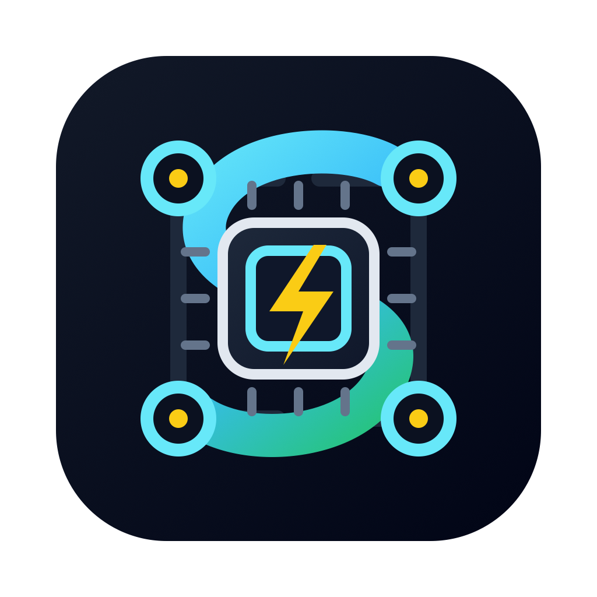

Dhimitrios Duka
Hi! I'm Dhimitrios. I'm currently a Research Assistant at the Max Planck Institute for Informatics under the supervision of Dr. Anna Kukleva, and pursuing my Computer Science master's degree at Saarland University. Prior to this, I worked as a web developer, contributing to the Unified Patent Court CMS. I have completed my bachelor's degree in Computer Engineering at the Polytechnic University of Tirana (UPT) with high honors under the supervision of Assoc. Prof. Evis Trandafili, where my thesis involved developing the first Image Captioning generator for the Albanian language.
Research interests: Computer Vision & Graphics, Explainable Machine Learning, and its applications within the field of Computer Vision.

News
- Apr 2026 Invited talk: "MM-TS: Multi-Modal Temperature and Margin Schedules for Contrastive Learning with Long-Tail Data," Department of Computer Engineering, Middle East Technical University.
- Mar 2026 I gave an oral presentation of our paper MM-TS at WACV 2026 in Tucson, Arizona.
- Oct 2025 Our paper MM-TS: Multi-Modal Temperature and Margin Schedules for Contrastive Learning with Long-Tail Data has been accepted at WACV 2026 as an oral presentation.
Publications
Talks
- Aug 2025 Seminar talk on Generative Models in Computer Vision (GMCV), Seminar led by Dr. Jan Eric Lenssen.
- Aug 2024 Seminar talk on Explainable Machine Learning (ExML), Seminar led by Dr. Jonas Fischer.
Projects & Open Source

sCode
A VS Code extension that brings SLURM cluster workflows into the editor: live job monitoring with
progress and GPU stats, job array and history management, instant stdout/stderr
access, and a GPU partition view for picking where to submit next. Actively maintained and used daily by
fellow researchers and others working on SLURM clusters.
···
···
···

Multilingual Language Model Fine-Tuning
We analyze the effects of different fine-tuning methods (Full fine-tuning, BitFit, LoRA, IA3) on language models, with a focus on under-represented languages like quy_Latn. We compare the performance of pre-trained models such as XGLM-564M and GPT-2 on multilingual datasets like NLLB and assess their hidden state representations. Visualization techniques, including PCA and t-SNE, are applied to represent the hidden states of tokens and sentences in multilingual spaces. Additionally, we evaluate the performance trade-offs associated with parameter-efficient fine-tuning techniques.

Zeus: A Ray Tracer
Zeus is a ray tracer developed on top of the lightwave framework as the final project for the Computer Graphics course at Saarland University during the winter semester of 2023/2024 by Dhimitrios Duka and Arseny Dremin.

A Neural Image Caption Generator for the Albanian Language
We employed an Encoder-Decoder architecture to generate automatic image captioning in the Albanian language, utilizing transfer learning with pre-trained image features in the encoder to enhance performance. To our best knowledge, this work represents the first implementation of image captioning for the Albanian language.